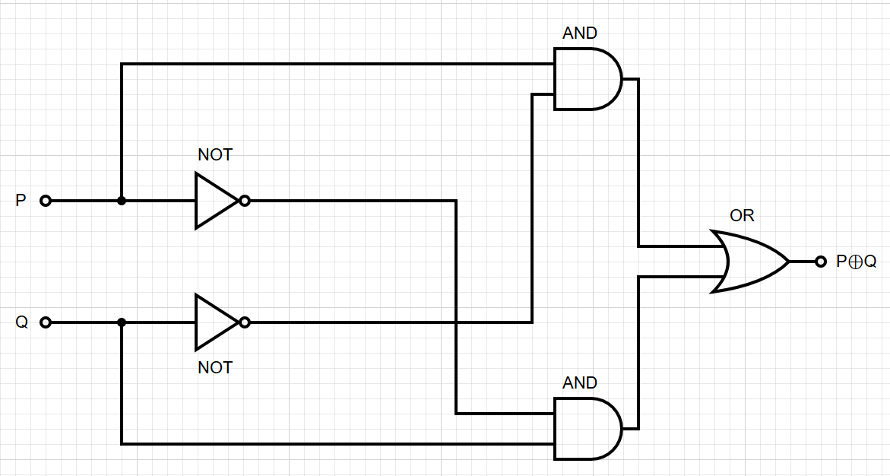

Boolean Logic
In Boolean Logic, we can only use two valuses; TRUE and FALSE.
This mathematical system is the foundation of digital electronics and computer design. Often we represent TRUE by 1
and FALSE by 0, but this is just representation, technically, \(TRUE \neq 1\).
Boolean values are combined using the following fundamental operations:
Definition: Fundamental Boolean Operations
- Negation (NOT): \(\neg\)
The negation of a Boolean value is its opposite:
\(\neg 1 = 0\) and \(\neg 0 = 1\).
- Conjunction (AND): \(\wedge\)
The conjunction of two Boolean values is 1 if both operands are 1:
\(1 \wedge 0 = 0,\; 1 \wedge 1 = 1,\; 0 \wedge 0 = 0\).
- Disjunction (OR): \(\vee\)
The disjunction of two Boolean values is 1 if at least one operand is 1:
\(1 \vee 0 = 1,\; 1 \vee 1 = 1,\; 0 \vee 0 = 0\).
More Boolean operations:
- Exclusive Or (XOR): \(\oplus\)
XOR is 1 if exactly one of its two operands is 1:
\(1 \oplus 1 = 0,\; 1 \oplus 0 = 1,\; 0 \oplus 0 = 0\).
- Equality (XNOR): \(\leftrightarrow\)
Equality is 1 if both operands have the same value:
\(1 \leftrightarrow 1 = 1,\; 1 \leftrightarrow 0 = 0,\; 0 \leftrightarrow 0 = 1\).
This is the logical complement of XOR.
- Implication: \(\rightarrow\)
The implication \(P \rightarrow Q\) is 0 only when \(P = 1\) and \(Q = 0\); otherwise it is 1:
\(1 \rightarrow 1 = 1,\; 1 \rightarrow 0 = 0,\; 0 \rightarrow 0 = 1\).
Negation of Conjunction & Disjunction
Definition: NAND and NOR
- NAND: \(\uparrow\)
The negation of conjunction:
\[
P \uparrow Q = \neg(P \wedge Q).
\]
NAND is TRUE unless both \(P\) and \(Q\) are TRUE:
\(1 \uparrow 1 = 0,\; 1 \uparrow 0 = 1,\; 0 \uparrow 1 = 1,\; 0 \uparrow 0 = 1\)
- NOR: \(\downarrow\)
The negation of disjunction:
\[
P \downarrow Q = \neg(P \vee Q).
\]
NOR is TRUE only when both \(P\) and \(Q\) are FALSE:
\(1 \downarrow 1 = 0,\; 1 \downarrow 0 = 0,\; 0 \downarrow 1 = 0,\; 0 \downarrow 0 = 1\).
Definition: Functional Completeness
A set of Boolean operations is functionally complete if every Boolean function
can be expressed using only operations from that set.
Remarkably, both \(\{\uparrow\}\) (NAND alone) and \(\{\downarrow\}\) (NOR alone) are functionally
complete. This means that any Boolean circuit can be built from a single type of gate - a fact
exploited in hardware design, where NAND-based logic dominates CPU and memory circuits.
We demonstrate this for NAND below.
NAND is Functionally Complete
Every fundamental operation can be expressed using only NAND:
- NOT: \(\quad \neg P = P \uparrow P\)
- AND: \(\quad P \wedge Q = (P \uparrow Q) \uparrow (P \uparrow Q)\)
- OR: \(\quad P \vee Q = (P \uparrow P) \uparrow (Q \uparrow Q)\)
Since AND, OR, and NOT can express any Boolean function, and all three can be built from NAND alone,
NAND is functionally complete.
Since every Boolean operation can be written in terms of AND, OR, and NOT, it follows that
every Boolean operation can be expressed using NAND alone. For example:
- Implication:
\[
P \rightarrow Q = \neg P \vee Q = P \uparrow (Q \uparrow Q)
\]
- XOR:
The standard 4-NAND gate construction is
\[
P \oplus Q = (P \uparrow (P \uparrow Q)) \uparrow (Q \uparrow (P \uparrow Q))
\]
- Equality (XNOR):
Since \(P \leftrightarrow Q = \neg(P \oplus Q)\), we negate the XOR construction above:
let \(R = (P \uparrow (P \uparrow Q)) \uparrow (Q \uparrow (P \uparrow Q))\), then
\(P \leftrightarrow Q = R \uparrow R\), using 5 NAND gates total.
Circuits
When we study Boolean logic as a purely mathematical system, the focus is on abstract algebraic properties. However,
when these Boolean functions are implemented in hardware, they are called logic gates.
Computers are built using electronic components wired together in a design known as a digital circuit. Logic
gates are physically implemented using transistors, and each Boolean operation corresponds to a type of gate that controls the
flow of electrical signals.
However, circuits are not only used for physical hardware but also for theoretical models in computer science. When Boolean
functions are used to construct a computational model rather than a physical device, we refer to them as Boolean circuits.
These circuits serve as a fundamental concept in computational complexity theory, where they help analyze the efficiency and
limitations of different computational processes. Here, we only introduce the definition of Boolean circuits. We will revisit this topic
after learning complexity theory in the future.
Definition: Boolean Circuit
A Boolean circuit is a directed acyclic graph (DAG)
where nodes (often called gates) represent computational steps. The nodes are classified as:
- Input nodes (sources): Represent Boolean variables.
- Gate nodes (internal): Each computes a Boolean function from a
functionally complete set (e.g., \(\{\wedge, \vee, \neg\}\) or \(\{\uparrow\}\)) of its inputs.
- Output nodes (sinks): Produce the final result(s) of the circuit.
The size of a circuit is its total number of gates, and its
depth is the length of the longest path from any input to an output.
Example: Circuit for XOR
The expression \(P \oplus Q = (P \wedge \neg Q) \vee (\neg P \wedge Q)\)
is realized by the following Boolean circuit using the standard gate set \(\{\neg, \wedge, \vee\}\):

This circuit consists of:
- 2 Input nodes: \(P\) and \(Q\).
- 5 Gate nodes: 2 NOT gates, 2 AND gates, and 1 OR gate. Thus, the size is 5.
- 1 Output node: Producing the final result of \(P \oplus Q\).
The depth of this circuit is 3. For instance, the path \(P \to \text{NOT} \to \text{AND} \to \text{OR}\)
is one of the longest paths, passing through three consecutive gates.
The DAG structure ensures that computation proceeds in a well-defined order from inputs to output,
with no feedback loops. The size of a circuit (number of gates) and its
depth (length of the longest path from input to output) are key measures in
complexity theory.
Boolean logic underlies virtually all of computer science - from the physical transistor level to
the abstract models studied in complexity theory. The operations introduced here appear throughout
the curriculum: XOR is fundamental to finite field arithmetic in abstract algebra,
in cryptography, and Boolean circuits provide a computational model complementary to the
Turing machine.